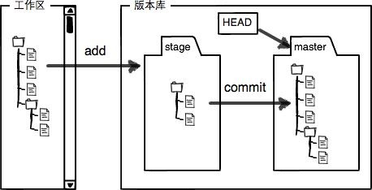

git教程--廖雪峰
网站廖雪峰Git教程
- 集中式 vs 分布式
- git 工作区 暂缓区 概念
-
命令
- 查看状态 git status
- 查看修改 git diff HEAD -- fileA
- 撤销修改 git checkout -- fileA
- 查看日志 git log | git reflog
- 版本回退 git reset --hard commit_id
- 添加文件 到暂缓区 git add fileA
- 删除文件 到暂缓区 git rm fileA
- 添加远程库 git remote add origin git@server-name:path/repo-name.git
- 克隆远程库 git clone git@github.com:**/**.git
- 分支管理
- 远程库
- 标签管理
- 自定义git
集中式 vs 分布式
集中式：vcs，svn
分布式：git，BitKeeper，Mercurial，Bazaar
git 工作区 暂缓区 概念

- 当你在工作区(Working Directory 电脑里面能看到的目录)中新添一个 fileA，那么这个文件a就只存在工作区中；
- 当你使用命令
git add fileA时， 这个时候 fileA 已经进入版本库中的 stege (暂缓区)，实际上就是把文件修改添加到暂存区； - 当你使用命令
git commit -m 'com'提交更改时，实际上就是把暂存区的所有内容提交到当前分支。
因为我们创建Git版本库时，Git自动为我们创建了唯一一个master分支，所以，现在，git commit就是往master分支上提交更改。
命令
查看状态 git status
查看修改 git diff HEAD -- fileA
git diff HEAD -- fileA 命令可以查看 文件fileA 工作区和版本库里面最新版本的区别。
撤销修改 git checkout -- fileA
git checkout -- fileA 把readme.txt文件在工作区的修改全部撤销，这里有两种情况：
- 是 fileA 自修改后还没有被放到暂存区，现在，撤销修改就回到和版本库一模一样的状态；
- 是 fileA 已经添加到暂存区后，又作了修改，现在，撤销修改就回到添加到暂存区后的状态。
总之，就是让这个文件回到最近一次git commit或git add时的状态。
场景：
- 当你改乱了工作区某个文件的内容，想直接丢弃工作区的修改时，用命令git checkout -- file。
- 当你不但改乱了工作区某个文件的内容，还添加到了暂存区时，想丢弃修改，分两步，第一步用命令git reset HEAD file，就回到了场景1，第二步按场景1操作。
- 已经提交了不合适的修改到版本库时，想要撤销本次提交，参考版本回退一节，不过前提是没有推送到远程库。
查看日志 git log | git reflog
git log 穿梭前，用此命令可以查看提交历史，以便确定要回退到哪个版本, 可以加参数 --pretty=oneline
git relog 要重返未来，用此命令查看命令历史，以便确定要回到未来的哪个版本
版本回退 git reset --hard commit_id
git reset --hard HEAD^ 退回到上一个版本(HEAD是最新版 HEAD是上一个版本)
git reset --hard 3628164 退回到指定版本
添加文件 到暂缓区 git add fileA
删除文件 到暂缓区 git rm fileA
- 本地工作区删除文件 fileA
rm fileA - 删除文件到暂缓区
git rm fileA然后提交git commit -t "remove fileA" - 如果出现误删，命令
git checkout -- fileA用版本库里的版本替换工作区的版本，无论工作区是修改还是删除，都可以“一键还原”
添加远程库 git remote add origin git@server-name:path/repo-name.git
- 关联远程库
git remote add origin git@server-name:path/repo-name.git - 第一次推送master内容
git push -u origin master - 后续推送master内容
git push origin master
克隆远程库 git clone git@github.com:**/**.git
克隆远程库 git clone git@github.com:**/**.git
分支管理
创建分支 git branch dev
git branch dev
切换分支 git checkout dev
git checkout dev
创建并切换分支 git checkout -b dev
git checkout 命令加上 -b 参数表示创建并切换，相当于一下两条命令：
git branch dev
git checkout dev
查看分支 git branch
#查看当前分支
#git branch命令会列出所有分支，当前分支前面会标一个*号
git branch
合并分支 git merge dev
#git merge 命令用于合并指定分支到当前分支
#将dev分支合并到master分支上
git merge dev
删除分支 git branch -d dev
git branch -d dev
git branch
删除远程分支
git branch -r -d origin/branch-name
git push origin :branch-name
解决冲突
git merge dev
#提示有冲突
#查看冲突
git status
#根据提示内容 查看冲突文件
#git 用 <<<<<<<,=======,>>>>>>>标记出冲突中不同分支的内容，修改后再 add，commit
查看分支合并图
git log --graph --pretty=oneline --abbrev-commit
合并时禁用 Fast forward 模式
通常，合并分支时，如果可能，git会用 Fast forward 模式，但这种模式下，删除分支后，会丢掉分支信息
如果要强制禁用 fast forward 模式，git就会在merge时生成一个新的commit，这样，从分支历史上就可以看出分支信息
#1. 创建并切换dev分支
git checkout -b dev
#2. 修改fileA文件，并提交
git add fileA
git commit -m "add merge"
#3. 切换回master
git checkout master
#4. 合并dev分支，使用 --no-ff参数，表示禁用 Fast forward
# 注 本次合并要创建一个新的commit，所以加上 -m 参数
git merge --no-ff -m "merge with no-ff" dev
#5. 查看分支历史
git log --graph --pretty=oneline --abbrev-commit
分支策略
master分支应该是非常稳定的，也就是仅用来发布新版本，通常不能再上面开发。
dev分支是不稳定的，通常用来开发，到某个时候，比如2.0版本发布时，再把dev分支合并到master上，在master分支上发布2.0版本
开发人员每个人都在dev分支，每个人都有自己的分支，时不时往dev分支上合并就可以

突发的Bug分支 git stash
场景:
当你突然接到一个代号101的bug任务（两个小时内完成）
而你之前是在dev分支开发，手头的工作还需要两天才能完成
解决：
#1. 当前分支是dev，查看状态， 可以看到有一些修改记录(之前做的工作)
git status
#2. 将当前工作现场 储藏 起来，等以后回复现场继续工作
git stash
#3. 查看工作区，应该是干净的(除非有 没被git管理的文件)
git status
#4. 首先确定要在哪个分支上修复bug，假定是在master分支上，切换到master上
git checkout master
#5. 创建新分支 issue-101
git checkout -b issue-101
#6. 开始修复bug ... 一大堆操作
#7. 修复完毕，提交
git add fileA
git commit -m "fix bug 110"
#8. 切换到master分支，完成合并，删除issue-101分支
git checkout master
git merge --no-ff -m "merged bug fix 101" issue-101
git branch -d issue-101
#9. bug修复完成，回到dev分区
git checkout dev
git status
#10. 工作区是干净的，刚才 储藏的 现场哪去了，用gitstash list 命令查看
git stash list
#11. 恢复现场 两种方法
#11.1 用 git stash apply 恢复，但恢复后，stash内容并不删除，你需要用 git stash drop命令删除
git stash apply
git stash drop
#11.2 用 git stash pop 命令，恢复的同时也把stash内容删除
git stash pop
#12 再用 git stash list 查看，就看不到任何stash内容了
#你也可以多次stash，恢复的时候用 git stash list 查看，然后恢复指定的 stash
git stash list
git stash apply stash@{0}
强行删除分支 git branch -D dev
#对于未被合并的分支dev，如果删除，将会丢失掉修改，如果要强行删除，使用命令
git branch -D dev
远程库
查看远程库 git remote
当你从远程仓库克隆时，实际上Git自动把本地master分支和远程master分支对应起来，并且，远程仓库的默认名称是 origin
#查看远程库
git remote
#显示详细信息
git remote -v
推送分支 git push dev
推送分支，就是把该分支上的所有本地提交推送到远程库。推送是，要指定本地分支，git就会把该分支推送到远程库对应的远程分支上
#推送master分支
git push origin master
#推送dev分支
git push origin dev
抓取分支 git pull dev
#1. developerA 克隆分支
git clone git@github.com:**/**.git
#2. developerA 查看当前分支，
# 注 当clone时，默认情况下，只能看到本地的master分支，
git branch
#3. developerA 如果要在dev分支上开发， 就必须创建远程origin的dev分支到本地，于是用这个命令创建本地dev分支
git checkout -b dev origin/dev
# developerA 现在便可以在dev上修改，然后把dev分支push到远程
git add fileAAA
git commit -m "add fileAAA"
git push origin dev
#4. 当你也在 dev 分支上开发， 修改并试图推送的提交的时候有冲突，解决办法是 先用 git pull 把最新的提交从 origin/dev 抓下来，然后在本地合并，解决冲突，再推送
git pull
#5. 若 git pull 提示 “no tracking information”，原因是没有指定本地dev和远程origin/dev分支的链接， 设置 dev 和 origin/dev链接
git branch --set-upstream dev origin/dev
#6. 再 pull
git pull
#7. 这时的pull会提示有合并冲突，手动解决 参考 解决分支 ，然后在提交 push
git commit -m "merge & fix conflict"
git push origin dev
标签管理
发布一个版本时，我们通常在版本库中打一个标签，这样，就唯一确定了打标签时刻的版本，将来无论什么时候，取某个标签的版本，就是把那个打标签的时刻的历史版本qu出来，所以，标签也是版本库的一个快照
创建标签 git tag tagName
#查看分支
git branch
#切换到需要打标签的分支上
git checkout master
#创建标签
git tag v3.0
#创建带说明的标签 -a指定标签签名，-m指定说明文字
git tag -a v3.1 -m "version3.1 released" 3628164
#通过-s用私钥签名一个标签
##签名采用PGP签名，因此不许先安装gpg，如果没有找到gpg，或者没有gpg密钥对，就会报错
git -tag -s v3.2 -m "signed version 3.2 released" fec145a
#查看所有标签 标签不是按照时间顺序出的，而是按照字母排序
git tag
#查看某个标签的信息
git show v3.0
#默认标签是打在最新提交的commit上的。有时候，如果顽疾打标签，如现在是周五，但应该在周一打的标签没有打，怎么处理
#解决： 找到历史提交的commitId 然后打上标签
git log --pretty=oneline --abbrev-commit
git tag v2.5 commitId # 注 此commitId应替换成实际值
git tag
推送标签到远程 git push origin tagName
#推送某个标签到远程
git push origin v3.1
#推送全部尚未推送到远程的本地标签
git push origin --tags
删除本地标签git tag -d tagName
因创建的标签都之存储在本地，不会指定推送到远程，所以，打错的标签可以在本地安全删除
zsh
git tag -d v3.1
删除远程标签 git push origin :refs/tags/tagName
#先从本地删除
git tag -d v3.2
#然后从远程删除
git push origin :refs/tags/v3.2
#上github上看是否真的删除了远程标签
自定义git
让git显示颜色 git config --global color.ui.true
git config --global color.ui.true
忽略特殊文件 .gitignore文件
在git工作区的根目录下创建一个特殊的 .gitignore 文件，然后把要忽略的文件名填进去，git 就会自动忽略这些文件
忽略文件的原则
- 忽略操作系统自动产生的文件，比如缩略图等
- 忽略编译生成的中间文件、可执行文件等，也就是如果一个文件是通过另外一个文件自动生成的，那自动生成的文件就没必要放进版本库，如java编译产生的 .class 文件
- 忽略你自己的带有敏感信息的配置文件，比如存放口令的配置文件
配置别名 git config --global alias.aliasName cmdName
git config --global alias.st status # git st = git status
git config --global alias.co checkout # git co = git checkout
git config --global alias.ci commit # git ci = git commit
git config --global alias.br branch # git br = git branch
git config --global alias.unstage 'reset HEAD' # git unstage test.py = git reset HEAD test.py
git config --global alias.last 'log -l' # git last = git log -1
git config --global alias.lg "log --color --graph --pretty=format:'%Cred%h%Creset -%C(yellow)%d%Creset %s %Cgreen(%cr)%C(bold blue)<%an>%Creset' --abbrev-commit" #可以试一下git lg 的效果
搭建git服务器
#1. 安装git
sudo apt-git install git
#2. 创建一个git用户(linux用户)，用来运行git服务
sudo adduser git
#3. 创建证书登录
# 收集所有需要登录的用户的公钥，就是他们自己的id_rsa.pub文件，把所有公钥导入到 /home/git/.ssh/authorized_keys 文件里，一行一个
# 要方便管理公钥 用 Gtiosis
# 要像svn那样变态地控制权限，用 Gitolite
#4. 初始化git仓库 选定一个目录作为git仓库，假定是/srv/sample.git，并修改权限
cd /srv
sudo git init --bare sample.git
sudo chown -R git:git sample.git
#5. 禁用shell登录
# 处于安全考虑，第二步创建的git用户不允许登录shell，这可以通过编辑 /etc/passwd 文件完成，找到类似下面的一行
git:x:1001:1001:,,,:/home/git:/bin/bash
#改为
git:x:1001:1001:,,,:/home/git:/usr/bin/git-shell
# 这样git用户可以正常通过ssh使用git，但无法登录shell，因为我们为git用户指定的git-shell每次已登录就自动退出
#6. 克隆远程仓库
git clone #可以开始你的表演了